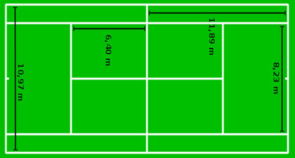

Profesyonel bir tenis kortu dikdörtgen şeklindedir ve 23,77m (78 feet) uzunluğunda, 10,97 m (36 feet) genişliğindedir. Tekler müsabakası için genişlik 8,23 m (27 feet)‘dir.
Kort 1,07 metre (3 1/2 feet) yüksekliğindeki iki direğin üzerinden geçen çelik tel veya kordona asılmış ağ (net) ile ortadan ikiye ayrılmıştır. Ağ gergin olmalı, direkler arasını tamamen doldurmalı
ve topun geçmeyeceği kadar sık dokunmuş olmalıdır. Ağın orta yüksekliği 0,914 m (3 feet) olup, fileyi tutan çelik telin üzerinden geçerek yere sabitlenen bir “orta bant” ile ağın yüksekliği ve gerginliği ayarlanır.
Ağın üzerindeki çelik tel, bir bant tarafından (ağ bantı) örtülmüş olmalı, ağ bantı ve orta bant tamamıyla beyaz olmalıdır. Fileyle ilgili kurallar arasında şunlar yer alır:
-Çelik telin veya kordonun çapı en çok 0,8 cm (1/3 inç) olmalıdır.
-Ortada bulunan ağ bandının genişliği en çok 5 cm (2 inç) olmalıdır.
-SAğ bandının genişliği, çelik telin her iki yanından da aşağıya doğru en az 5 cm (2 inç), en çok 6,35 cm (2.1/2 inç) olmalıdır.
Kortların genişliğini belirleyen çizgilere sınır çizgileri denir. Bunların ortasındaki küçük işaretin adı ise çilekeş çizgisidir. Bu çizgilerin kalınlığı 5 cm dir.

Servis Servis, bir oyuncunun elindeki topu havaya attıktan sonra raketle vurarak karşı sahaya göndermesidir. Servis şu şekilde icra edilir (sağ elini kullanan oyuncular için):
1- Raket ve top birbirine paralel şekilde elde hazır olur.
2- Doğru servis kutusuna geçilir ve top alından yukarı doğru yaklaşık 2 kol boyu yükseltilir.
3- Top raketle eş zamanlı olarak birbirinden ayrılırken sağ eldeki raket geriye doğru hareket ettirilir.
4- Dirsekten, yukarıya doğru yükselen topa, omuzdan kuvvet alarak vuruş uygulanır ve raket sol ayağa doğru indirilerek vuruş tamamlanır.
Oyuncunun tek seferde iki servis atma hakkı vardır, ilk servisi atamadığında "Birinci hata" olarak nitelendirilir ve ikinci servis için atışı beklenir. İkinci servisi de atamadığı durumda ise puan karşı tarafın olur.
Forehand Forehand, raket tutan elin avuç içi karşıya (vuruş yönüne) gelecek şekilde yapılan vuruştur. Bu vuruşta kol gergin bir şekilde geriye çekilir.
Bu esnada bacaklar birbirine paralel olacak şekilde hafif bükük durulur. Gerilen raket aşağıdan giderek hafif bükülmüş dizin tam önünde durur, topa vurulur.
Backhand Backhand vuruşunda geriye iki elle raket çekilir. Raket geriye çekildikten sonra raketin yüzü, karşıyı göstermelidir. Raket çekilirken dizler paralel bir biçimde hafif kırılmalıdır.
Topa dizin biraz önünde raket iki elle vurulmalıdır. Raket topa vurulduktan sonra iki elle boyna çekilmelidir.
Puan Teniste Puanlama Sistemi aşağıdaki şekildedir.
Topu rakibin sahasına atan oyuncu şu koşullarda 1 puan (sayı) kazanır:
-Rakip topa vuramadan, top bir defadan daha fazla yere değerse (iki kere veya daha fazla sekerse),
-Rakip topa vuramaz (karşılayamaz) ve top içeri düşerse,
-Rakip topa vursa dahi topu dışarı atarsa,
-Rakip topa vursa dahi top fileye takılır ve kendi sahasına düşerse,
-Rakip topa vurduktan sonra (topu rakibin sahasına geçse dahi), rakibin raketi fileyi aşar ise,
-Rakip topu karşıladığında, topu doğru sahaya gönderse dahi, top kendi raketine bir kereden fazla değer ya da vücuduna değer ise.
Rakip puan kaybeder. Top rakibin hava sahasına girdiğinde rakip oyuncu topun yerden sekmesini beklemek zorunda değildir, yani topu havada karşılayabilir.